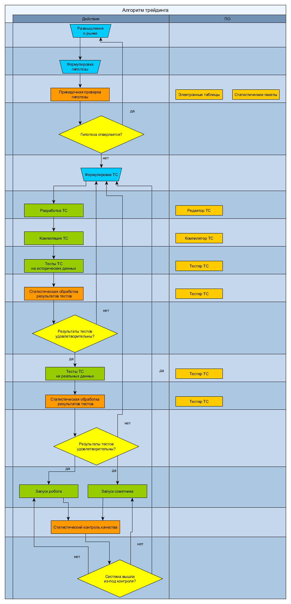

Трейдинг
Эта страница содержит информацию, которая имеет отношение к разработке
проекта и может быть полезной для людей, не знакомых с трейдингом.
Подходы к трейдингу
Научно-эмпирический взгляд на трейдинг
- Трейдинг является способом эмпирической проверки гипотез
определённого вида.
- В трейдинге проверяются гипотезы о наличии опережающей корреляции
между информацией, известной в какой-то момент времени, и будущим
движением цен финансовых инструментов.
- Гипотеза формулируется в виде торговой системы.
- Гипотеза не может быть доказана, но может быть опровергнута
(критерий фальсифицируемости).
- Результаты проверки гипотезы выражаются в денежных суммах или в
процентных доходностях. Таким образом, у нас есть не только критерий
для опровержения любой гипотезы, но и численные критерии для измерения
предпочтительности одной гипотезы другой.
- Никакое число успехов не доказывает верность гипотезы.
- Неуспешность ТС на исторических данных опровергает гипотезу.
- Неуспешность ТС на реальных данных опровергает гипотезу. Стоп-лоссы
и постоянный статистический контроль качества защищают от разорительных
чёрных лебедей.
- Пока гипотеза не опровергнута, она используется для торговли с целью
попытки её опровержения.
- После опровержения одной гипотезы трейдер формулирует новую.
Новая гипотеза должна быть успешной и там, где преуспела предыдущая
(работать на тех же исторических данных), и там, где предыдущая
потерпела неудачу. Обычно новая гипотеза обобщает предыдущую, включая её
как частный случай. Это может быть сделано через введение структурного
сдвига или введение нестационарности переменных, до этого полагавшихся
стационарными.
Литература
- Карл Р. Поппер. Объективное знание. Эволюционный подход.
- Нассим Николас Талеб. Чёрный лебедь. Под знаком непредсказуемости.
Статистический контроль качества в
трейдинге
- Andrew Kumiega, Benjamin Van Vliet. Quality Money Management.
- Andrew Kumiega, Ben Van Vliet. A Software Development Methodology
for Research and Prototyping in Financial Markets. URL:
http://arxiv.org/abs/0803.0162.
- Andrew Kumiega. Software project managemеnt for building high
frequency trading systems // Northwestern University, MSIT Tribune
Presentation. 2011, November 12. URL:
https://www.infotech.northwestern.edu/KumiegaNorthwestern.ppt.
Алгоритм трейдинга

Более точно, работа трейдера организована по спиральной модели.
Подробнее об этом см. в литературе по статистическому контролю качества
в трейдинге (список выше).
|